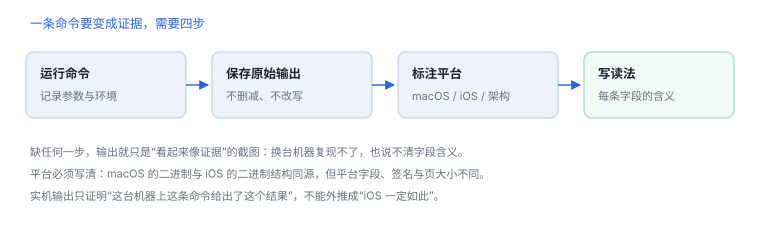

实机输出索引
11 处真实输出按命令索引，方便按“我手里有什么”反查
书里的“实机输出”全部来自本机执行，标注平台与命令。这一页把它们编成索引：想知道某条命令长什么样、某个字段怎么读，从这里反查即可。
1. 索引：按命令分类（32 处实机输出）
| 命令 | 平台 / 对象 | 用来看什么 | 讲 |
|---|---|---|---|
codesign -dvvv | macOS，系统命令行工具 | 签名摘要、hashes=18+2 | 17 |
codesign -dvvv | macOS，系统应用包 | hashes=397+7、平台签名、CDHash 与 CMSDigest | 17 |
codesign -d --entitlements | macOS，系统应用包 | 能力清单（沙盒、网络、私有能力） | 17 |
otool -hv | macOS，arm64 二进制 | 文件类型、ncmds/sizeofcmds、PIE | 15、09 |
otool -l | macOS，arm64 二进制 | LC_SEGMENT_64、initprot 0x5 | 16 |
otool -o | macOS，系统应用包 | 类数据段：isa/data、instanceSize | 13 |
vtool -show-build | macOS，两个产物 | platform、minos、sdk | 16 |
dyld_info -dependents | macOS，arm64e 二进制 | 依赖清单与路径 | 05 |
dyld_info -exports | macOS，双切片 | 可执行文件几乎不导出符号 | 05 |
dyld_info -imports | macOS，arm64 二进制 | 导入符号及其来源库 | 05 |
otool -s __TEXT __cstring | macOS，arm64 二进制 | 字符串段的小端字节布局 | 09 |
strings -a | macOS，arm64 二进制 | 先吐出段名/节名，不是业务串 | 09 |
vm_stat | macOS | 页大小 16384 与各类页数 | K02 |
ps -A -o pid,ppid,comm | macOS | 进程树与 PPID 关系 | K01 |
launchctl list | macOS | 作业标签、PID 空缺、上次退出码 | 14 |
size | macOS，双切片 | 按架构统计 text/data/bss | 15 |
lipo -detailed_info | macOS，双切片 | fat 头、偏移与 16 KB 对齐 | 15 |
codesign（Team 字段） | macOS，系统应用 | 平台签名 TeamIdentifier=not set | 17 |
xcodebuild -version | 仅装 CLT 的机器 | 缺 Xcode 时的真实报错 | 18 |
sw_vers | macOS | 版本号与构建号必须成对记录 | F05 |
xxd -l 48 | macOS，通用二进制 | 手读 fat 头：魔数、切片数、偏移 | 15 |
dyld_info -fixups | macOS，arm64e 二进制 | 链式修正项与 bind 目标 | 05 |
plutil -p | macOS，系统应用 | Info.plist 的构建信息 | 17 |
codesign --entitlements | macOS，命令行工具 | 无 entitlements 也是一种结论 | 17 |
nm -S | macOS，arm64e 二进制 | 未定义符号没有大小列 | 09 |
otool -l（LC_CODE_SIGNATURE） | macOS，arm64 二进制 | 签名数据的偏移与长度 | 16 |
nm -m / nm -u / nm -gU | macOS，命令行工具 | undefined external、未定义符号、导出符号 | 09 |
file + lipo -info | macOS，通用二进制 | 两个切片（x86_64 / arm64e） | 15 |
vtool -show-build | macOS，双切片 | 同一文件两个切片的 minos 不同（10.14 / 11.0） | 15、16 |
otool -l（弱链接） | macOS，系统应用 | LC_LOAD_WEAK_DYLIB 与符号置空 | 05 |
1.1 按讲反查
| 讲 | 命令 | 能确认什么 |
|---|---|---|
| 05 dyld | dyld_info -dependents / -exports | 依赖闭包与导出面 |
| 09 静态侦察 | nm -m / -u / -gU | 符号来源与可见性 |
| 13 元数据 | otool -o | 类结构、实例大小 |
| 15 Mach-O | otool -hv、file + lipo -info | 文件类型、架构切片 |
| 16 加载命令 | otool -l（段 / LC_MAIN / LC_UUID）、vtool -show-build | 布局、入口、构建版本 |
| 17 签名 | codesign -dvvv、--entitlements | 摘要结构、能力清单 |
2. 采集流程

3. 记录格式
一条输出的最小记录
命令：otool -hv /bin/ls
平台：macOS arm64（Rosetta 下为 x86_64），命令行工具版本随 Xcode
原始输出：MH_MAGIC_64 ARM64 … EXECUTE 20 1712 … PIE
读法：EXECUTE 是文件类型；20/1712 是命令条数与总长；PIE 表示位置无关
限制：不能外推到 iOS；iOS 二进制的平台字段与页大小不同3.1 字段速查
| 字段 | 含义 | 常见误读 |
|---|---|---|
hashes=A+B | A 个代码页槽位 + B 个特殊槽位 | 当成“哈希算法版本” |
CDHash | 对 CodeDirectory 的摘要 | 当成磁盘文件哈希 |
CMSDigest | 签名覆盖的更完整摘要 | 与 CDHash 混用 |
Platform identifier | 平台签名标识 | 当成 SDK 版本 |
minos / sdk | 最低系统版本 / 构建 SDK | 认为两者必须相同 |
initprot 0x5 | 读 + 执行 | 按十进制理解 |
4. 三条使用原则
- 平台与版本一起记：同一条命令在 macOS 与 iOS 上结构同源，但平台字段、签名与页大小不同。
- 原始输出不删减：删掉“多余”的行，往往正好删掉了解释字段的关键。
- 结论分三层：这条输出证明了什么（事实）、你可能推出什么（推断）、还不知道什么（未知）。
不要伪造输出
书里所有输出都来自真实执行，缺失的部分宁可标注“待实测”，也不填一个看起来合理的结果。
书里所有输出都来自真实执行，缺失的部分宁可标注“待实测”，也不填一个看起来合理的结果。
延伸：17 代码签名 · 16 加载命令 · 09 静态侦察
5. 自测
- 为什么“截图”不足以作为实机输出证据？
codesign -dvvv的hashes=18+2与397+7差异说明了什么？- 把 macOS 上的输出外推到 iOS 时，哪三个字段最容易出错？